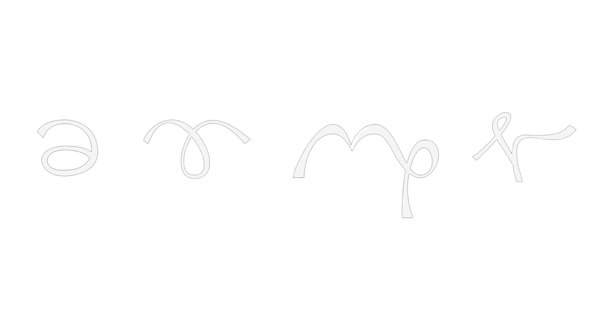
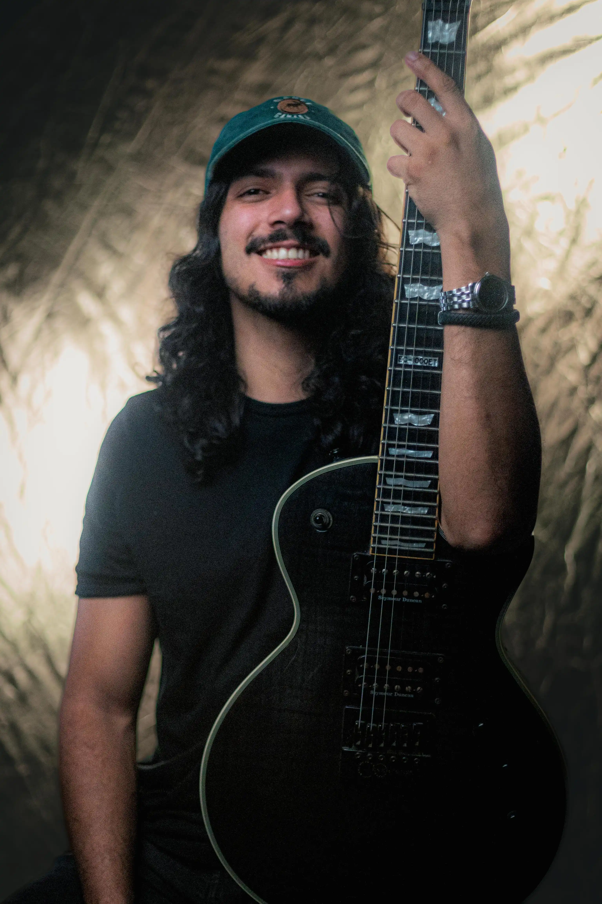
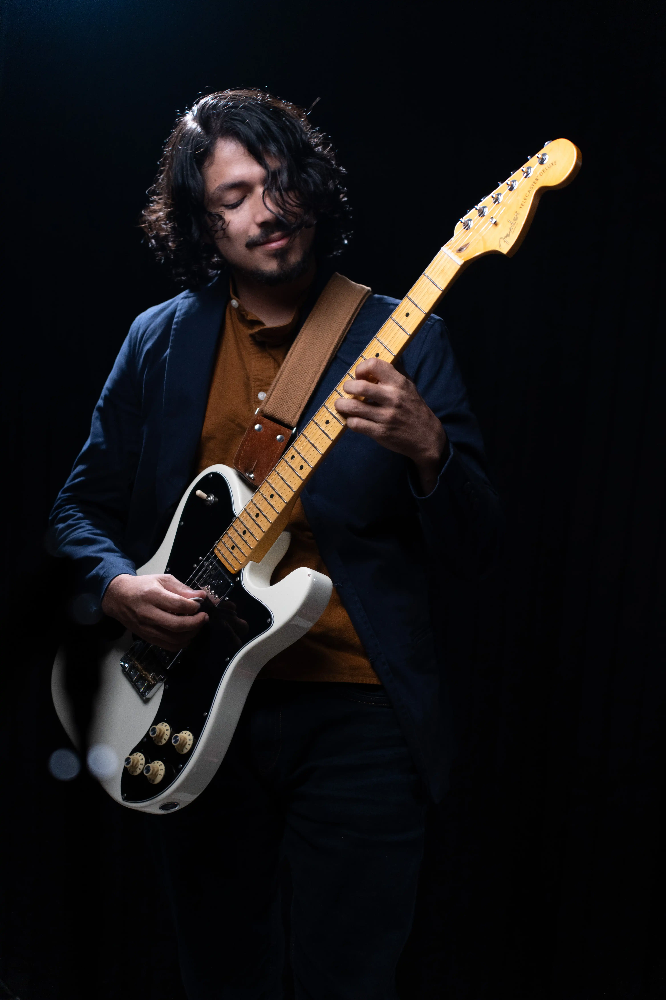
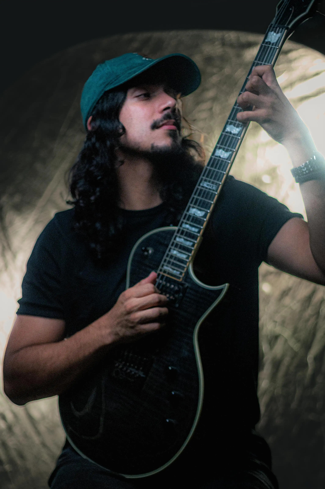
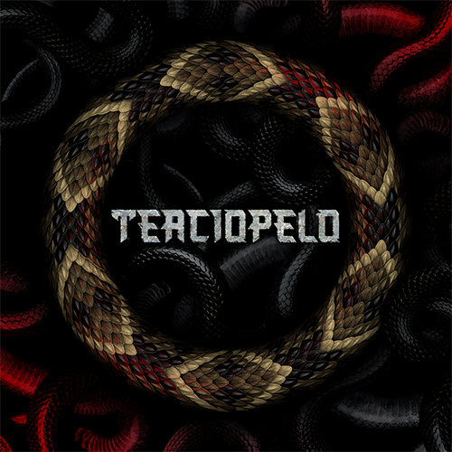
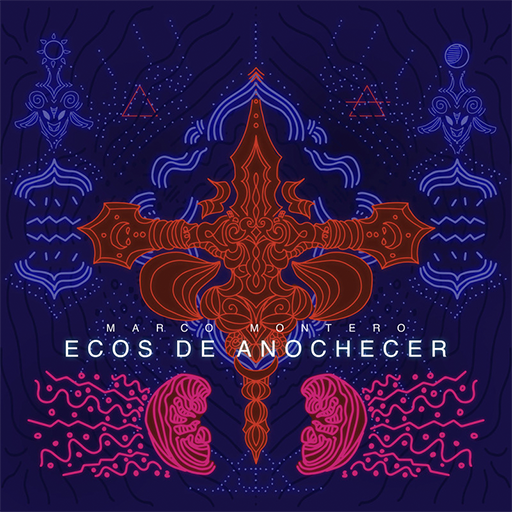
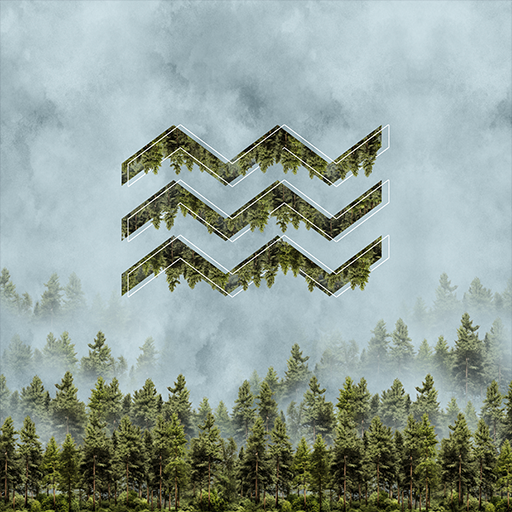
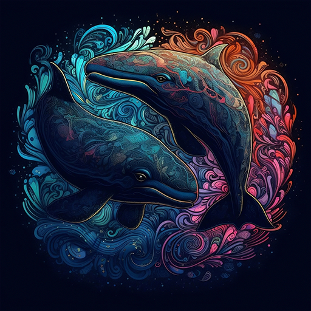
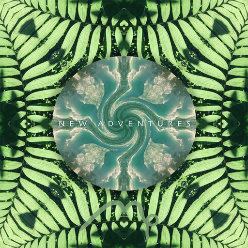

Marco Montero es un artista independiente, compositor y guitarrista de San Ramón de Alajuela, Costa Rica. Su propuesta sonora se caracteriza por una amalgama de math rock, rock progresivo y atmósferas cinemáticas, consolidándose como una de las figuras técnicas más relevantes de la escena instrumental actual.
Graduado con honores de la especialidad de ingeniería de sonido en la ULACIT 2025
Nominado a Mejor Sencillo Rock Progresivo por ZIGZAG (colab. José D. Porras).
Nominado a Mejor Sencillo Instrumental por Caos y Luz (colab. Chanti).
Nominado a Mejor Álbum de Rock Progresivo por Galería 1930 (En Vivo).
Nominado a Mejor Disco Instrumental por New Adventures.



El Gangster (Guitar Playthrough)
Migrar o Morir (En Vivo @London Room)

Banda de rock alternativo y progresivo donde Marco participa como guitarrista y productor. Con una propuesta atmosférica y potente, Terciopelo explora narrativas emocionales a través de composiciones complejas pero accesibles.
SITIO WEB OFICIALProducción, mezcla y masterización con un enfoque formal y cinemático.
SOLICITAR COTIZACIÓN
LP Conceptual. Una exploración densa que fusiona elementos del trap con el rock progresivo.
SPOTIFY
Sencillo en colaboración con José D. Porras. Pieza instrumental que destaca por su fusión de estilos.
SPOTIFY
EP basado en la resiliencia y paisajes sonoros inspirados en la naturaleza.
SPOTIFY
Nominado a Mejor Disco Instrumental (ACAM). Ocho temas que representan un viaje personal.
SPOTIFY